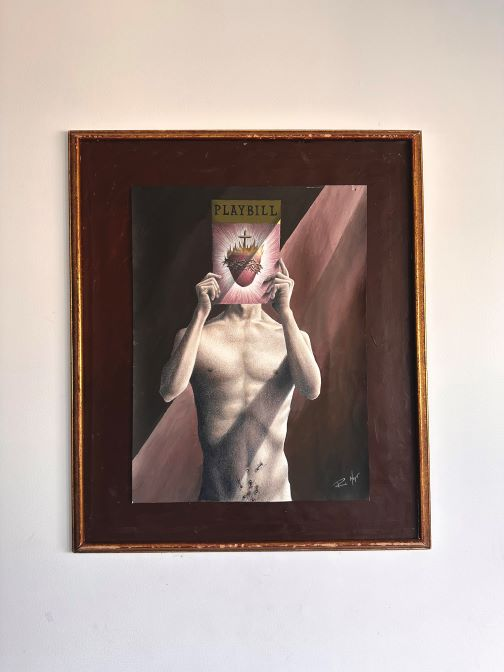

ATM Urinal
Feb. 2023
18 x 24 inches. Oil pastel and paint.
NYC Nightlife, pissing your money away. College, you realize how monetized every aspect of living is. I don’t think ATM Urinals are a real thing, though.
Judgement
Oct. 2020
14 x 17 inches. Pencil and paint.
This piece was created after my own coming out in high school, a conservative private Catholic high school. Weeks after, the school fired a male teacher for marrying another man, under the authority of the Archdiocese of Indianapolis. This was obviously a very rough time. The family you see is the average family template that surrounded me at that school. WASPy, rich, bully, judgy, hypocritical, and patriotic. Scholastic Gold Key.
Making Music
Aug. 2020
12 x 12 inches. Pencil and paint.
This piece is just about love, however you may find it.

Self Portrait
Feb. 2023
12 x 12 inches. Pencil and paint.
I made this piece specifically for my first art show in NYC. I wanted to draw everything I love; fabric, portraits, clothes, hands, flowers, wood, draping, fur, hair…
Target
Feb. 2023
18 x 24 inches. Paint under clear lasercut acrylic.
Free Fall
Aug. 2020
14 x 17 inches. Pencil and paint.
Free falling through life, through the world, through new people, through relationships, through school, through emotions, through and through.
Goliath With the Head of David
Mar. 2022
18 x 24 inches. Pencil and paint.
The inverse of the original biblical story, this version is more realistic to me. 1/3 in series.
Crucifixion
Jan. 2022
18 x 24 inches. Pencil and paint.
2/3 in series.

Liturgy of the Word
Feb. 2022
18 x 24 inches. Pencil and paint.
In the middle of Sunday Mass, the priest holds the Gospels and chants, “The Liturgy of the Word.” In ornamental vestments, the priest takes the role of Christ and administers this followed with sacraments. I stripped the moment, comparing the Gospel/Bible to theatrics, and emphasizing the humanity of the priest. 3/3